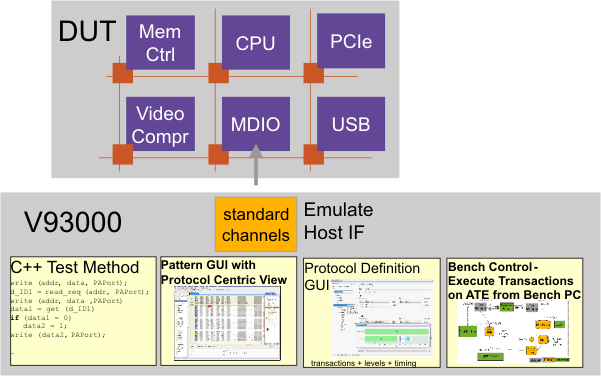

Host Interface
The Host Interface (HIF) is the central communication interface of a device. Such a central communication interface is often used for processor-based devices. Communication across the host interface happens through a particular protocol.
The transaction based protocol test feature of the V93000 system software allows to emulate host interfaces using protocols to
- interactively control BIST execution
- set up, execute and debug tests that exchange data between the DUT -or parts of it- and the V93000 on the transaction level of a protocol.

While the typical use case is to have only one Host Interface port, there might also be complex devices with rather independent building blocks that are controlled with several Host Interface ports.
Tests with Host Interfaces involved are also referred to as Host Interface Tests (HIF).
Functional changes
- Introduced in SmarTest 7.1.0